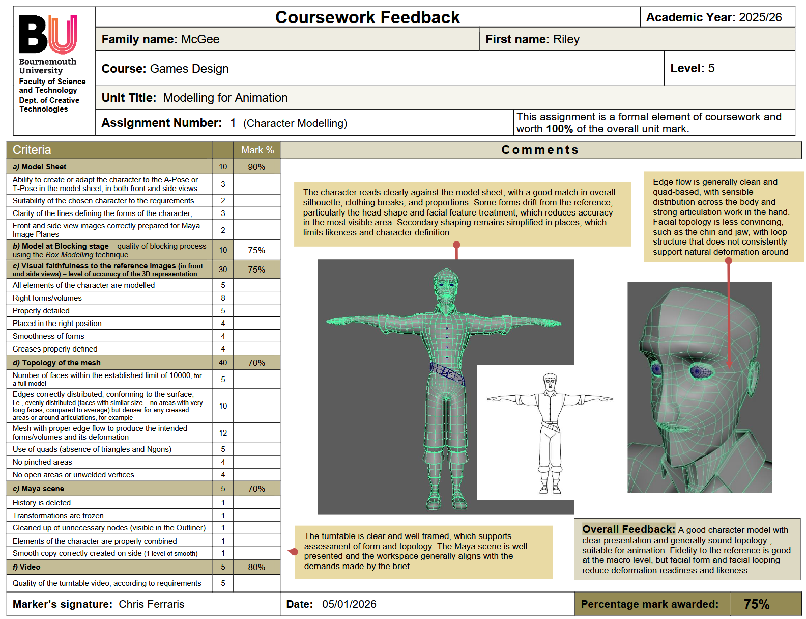

MODELLING FOR ANIMATION (MFA)
ASSIGNMENT 1
The following steps form the core of the creation process:
- Prepare or adapt a model sheet showing the character in front and side views, ensuring consistency and clarity for use as Maya Image Planes.
- Block out the character using the Box Modelling technique.
- Create a complete 3D model that accurately matches the reference, with clean topology, correct edge flow, and appropriate detail for animation.
This assignment is worth 100% of the unit grade.
Detailed Brief
The following steps are required as part of the modelling workflow:
- Create or edit a model sheet showing the character in front and side views, ensuring alignment and clarity for accurate modelling.
- Prepare clean reference images (without guide lines) for Maya Image Planes.
- Block out the character using the Box Modelling technique, then complete the full model with correct forms, proportions, and detail.
This assignment counts for 100% of the unit grade.
- A complete Maya 2025 project folder.
- A blocking‑stage Maya scene file (.ma) containing the character and correctly placed image planes.
- A final Maya scene file (.ma) containing the fully modelled character, the low‑poly version, the image planes, and a smoothed duplicate positioned on the right.
- A sourceimages folder containing the original model sheet, any adjusted versions, and the cropped front and side views used as Image Planes.
- A text file crediting the model sheet’s author (if not self‑created) and describing any AI involvement in the creation or adjustment process.
- A turntable video (AVI, MS‑CRAM, 1920×1080, 360 frames, ≤200MB) showing the low‑poly model with wireframe on shaded.
- A single combined polygon mesh (excluding rigid parts), with no floating geometry, no open seams, and deleted history.
- Topology that uses quads only, with clean edge flow, even distribution of faces, and appropriate density around articulations and creases.
- A final ZIP file named: surname_firstname_mfa_1_2025.
On this assignment I received a mark of 75/100, which I am pleased with, as it was my first time creating a 3D model of a character from scratch. If I were to redo this assignment, I would try to focus more on creating a more human-like character as this is where I lost most of my marks. 
Unfotunately, there were some issues with the marking of this assignment, as a result I didn't receive any detailed feedback in the marking criteria, however I set up a meeting with my lecturers to cover the feedback. I had spent some time with my lecturers trying to obtain proper feedback on this assignment, and seeked out to have it remarked, however we did not have much success. I am still very happy with a mark of 75 however, and I have learnt a lot from this process.
Edge flow is generally clean and quad-based, with sensible distribution across the body and strong articulation work in the hand. Facial topology is less convincing, such as the chin and jaw, with loop structure that does not consistently support natural deformation around.
The turntable is clear and well framed, which supports assessment of form and topology. The Maya scene is well presented and the workspace generally aligns with the demands made by the brief.
Overall Feedback: A good character model with clear presentation and generally sound topology, suitable for animation. Fidelity to the reference is good at the macro level, but facial form and facial looping reduce deformation readiness and likeness.
Feedback Images: